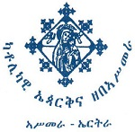

|
 |
 |

The Eritrean Catholic ChurchIn the wake of the disastrous missionary efforts of the Portuguese in Ethiopia in the 17th century, the imperial government prohibited all Catholic missionary activity in the country, which included Eritrea, for the next 200 years. The first successful resumption of such activity began in the mid-19th century when the Holy See established an Apostolic Prefecture for Abyssinia. Its first bishop was the Italian Lazarist St. Justin de Jacobis (1800-1860), who arrived in 1839. Much of his ministry took place in Eritrea, and he died at the Eritrean town of Hebo in 1860.
Eritrea became an Italian colony in 1890, and with the support of the new colonial government Catholic missionary activity intensified and met with a measure of success. In 1894 a separate Apostolic Prefecture for Eritrea was established. In the same year the Italian governor invited the Capuchin order to direct the evangelization of the colony and supervise the newly established educational system. In 1911 the Apostolic Prefecture became an Apostolic Vicariate, and in 1930 an Ordinariate. In the same year an Ethiopian College was founded within the walls of the Vatican; it also welcomed students from Eritrea.
In 1951 the Ordinariate of Eritrea became an Apostolic Exarchate and the following year Eritrea entered into a federal union with Ethiopia. In 1961, when the Holy See reorganized the hierarchies of Ethiopia and Eritrea, Asmara was established as a single eparchy covering the whole of Eritrea. After Eritrea became an independent nation in 1993, the Catholic bishops of Ethiopia and Eritrea continued to form a single Bishops’ Conference. In 1995 Pope John Paul II erected two new Eritrean eparchies in Barentu and Keren. In 2012 another eparchy was established at Segheneity.
In September 2004 the U.S. Secretary of State designated Eritrea as a “Country of Particular Concern” under the International Religious Freedom Act. The 2013 State Department’s report on religious freedom in Eritrea stated that the government’s performance on this issue was poor. The Catholic Church is one of four officially recognized and registered religious groups; others are vigorously suppressed.
In June 2014 the Catholic Bishops of Eritrea issued a pastoral letter entitled “Where Is Your Brother?” in which they decried the “desolate” conditions in the country, including the absence of freedom of speech, poor educational standards, lack of rule of law, economic hardship and the disastrous situation of young people who are emigrating in large numbers in search of a better life. They observed that a disproportionate number of Eritreans have been among the hundreds of immigrants who have drowned in the Mediterranean Sea while trying to reach Europe.
According to official statistics released by the Vatican in 2014, in Eritrea there was a total of 144 parishes, 105 diocesan priests, 366 religious priests, 736 men religious, 1,029 women religious and 235 seminarians. The church maintains seminaries in Asmara and Keren.
On January 19, 2015, Pope Francis reorganized the Catholic Church in Eritrea, detaching it from the Catholic Church in Ethiopia and raising it to the rank of metropolitan church sui iuris. The eparchy of Asmara became the metropolitan archeparchy with the four suffragan dioceses in Keren, Berentu and Segheneity. All these eparchies are of the Ethiopian or Ge’ez rite; the small remaining communities of the Latin tradition fall under their jurisdiction.
Location: Eritrea
Head: Metropolitan Menghesteab Tesfamariam (Born 1948, appointed 2001, Metropolitan 2015)
Title: Archbishop of Asmara
Residence: Asmara, Eritrea
Membership: 158,480
Last Modified: 31 Mar 2015